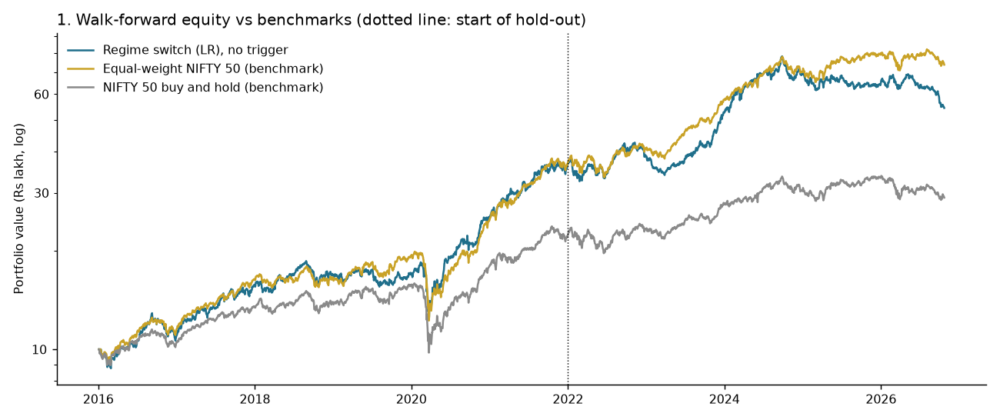
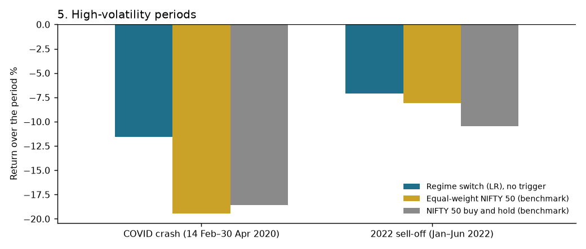
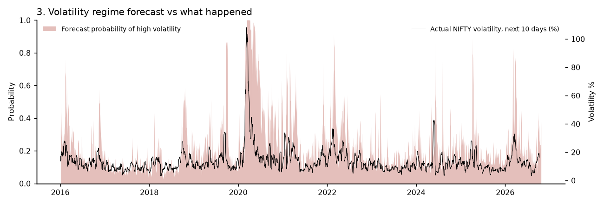
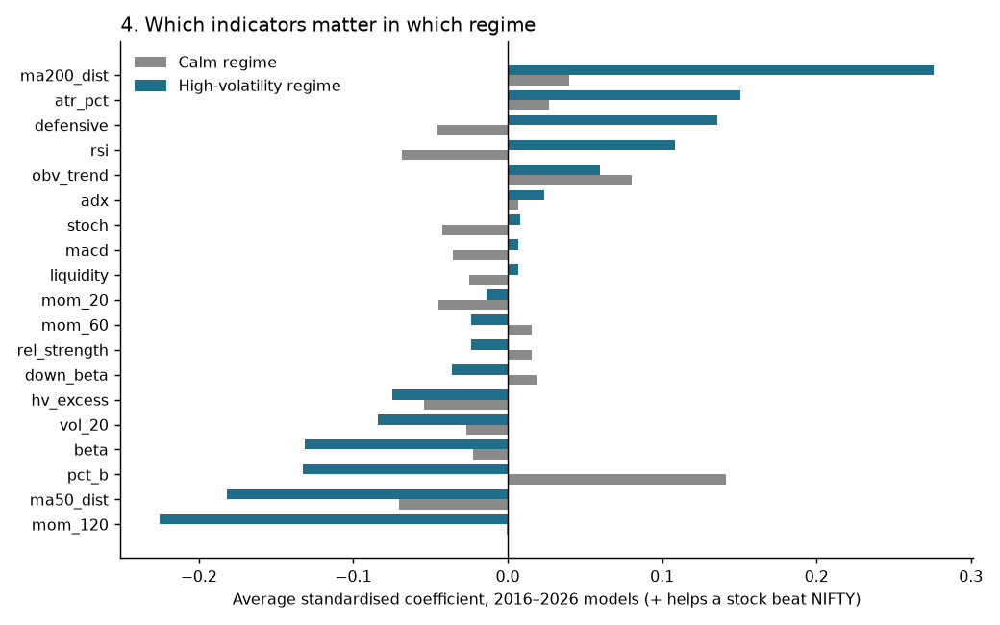

Design Experience project · Portfolio Management · 23 November 2026
VolSelect
A volatility-aware NIFTY 50 portfolio: forecast when market volatility will rise, hold the stocks most likely to hold up, and test it honestly on data the model never saw.
Vansh Dave · Karthik Agarwal | B.Tech AI, 5th semester | Guide: Sailesh Kulkarni
| Brief requirement (Portfolio Management) | Where in this report |
|---|
| Stock universe and selection logic | 3. Data; 4.2–4.3 |
| Weighting method and rebalancing frequency | 4.3 (inverse volatility, weekly) |
| Comparison against a benchmark | 4.4; every results table (NIFTY 50 and equal-weight NIFTY 50) |
| Annualised return, volatility, Sharpe, max drawdown, beta/alpha | 5.1, 5.2 |
| Portfolio value chart vs benchmark | 5.3 |
| Build on one period, test on a later one (out-of-sample) | 4.5; 5.2 |
| Code and data to reproduce any number | Appendix A: python verify.py |
Daily data, as the brief specifies for Portfolio Management groups. Academic research prototype; not investment advice.
1. Problem statement
When the stock market becomes volatile, most portfolios fall together. Can a model that forecasts rising volatility choose the NIFTY 50 stocks that lose less, without giving up too much return when markets are calm?
Retail and professional investors in India face this every time India VIX jumps: COVID in 2020, the 2022 sell-off, and smaller shocks since. Holding the index means taking every fall in full; moving to cash means missing rebounds. We test a middle path: stay fully invested, but switch which stocks are held according to a daily forecast of market volatility.
Research questions
- Can India VIX, realised volatility and a GARCH model forecast high-volatility periods for NIFTY better than a naive rule?
- In high-volatility periods, which stock characteristics (beta, sector, trend, momentum and others) go with beating the index?
- Does a portfolio that switches between a momentum ranking (calm markets) and a resilience ranking (rising or high volatility) beat NIFTY 50 and equal-weight NIFTY 50 after costs, on data it was not built on?
What counts as success
Higher return per unit of risk than the benchmarks (Sharpe), smaller losses in stress periods, and, most importantly, that both hold on the 2022–2026 out-of-sample period, after 0.15% trading cost per side.
2. Background and literature
Volatility clusters and can be forecast. Engle (1982) and Bollerslev (1986) showed that large price moves tend to follow large moves; the GARCH(1,1) model captures this and remains a standard one-day-ahead volatility forecast. India VIX, built from NIFTY option prices, measures the market's own expectation of volatility over the next 30 days; Whaley (2000) described the US equivalent as the "investor fear gauge". We combine both with realised volatility.
Which stocks hold up. Low-beta and low-volatility stocks have historically delivered better risk-adjusted returns than theory predicts (Ang et al., 2006; Frazzini and Pedersen, 2014), which suggests holding them when risk rises. Momentum, the tendency of recent winners to keep winning over 3–12 months (Jegadeesh and Titman, 1993), works in calm markets but is known to crash when markets turn sharply. That trade-off is the reason for a regime switch.
The benchmark to beat. DeMiguel, Garlappi and Uppal (2009) found that a simple equal-weight (1/N) portfolio is very hard to beat out of sample; optimised portfolios lose their edge to estimation error. We therefore report equal-weight NIFTY 50 alongside the NIFTY 50 index.
Testing honestly. The more settings a researcher tries, the more likely the best backtest is luck (Bailey et al., 2017). We use a walk-forward design (models refitted each year on past data only), keep a hold-out period from 2022, fix design choices in advance, and add automatic checks that flag any indicator or setting that worked before 2022 and failed after. Performance is measured with the Sharpe ratio (Sharpe, 1966), and beta and alpha from the capital asset pricing model (Jensen's alpha).
3. Data
| Item | Detail |
|---|
| Source | Yahoo Finance via the yfinance library; daily OHLCV, adjusted for splits and dividends. Bundled with the project as CSV and fingerprinted (SHA-256 manifest). |
| Instruments | The 50 stocks in NSE's current NIFTY 50 list (data/ind_nifty50list.csv, with sectors), the NIFTY 50 index (^NSEI) and India VIX (^INDIAVIX) |
| Period | Prices from January 2012 (to build features and train the first models); portfolio test 04 Jan 2016 to 23 Oct 2026 |
| Frequency | Daily candles (open, high, low, close, volume), as required for Portfolio Management groups |
| Split | Development (build) period 2016–2021; out-of-sample (test) period 1 Jan 2022 to the end of the data |
| Cleaning | Yahoo writes placeholder bars (open = high = low = close, no volume) for days a stock did not trade, including some market holidays; these are dropped. A stock's missing day is treated as a no-trade day (price carried). Stocks that listed after 2012 join on their first trading day. |
| Live data | The same source is fetched every trading day after the close for the forward paper-trading record, kept in live/ and never mixed with the research data. |
Known biases. The list is today's NIFTY 50, so stocks that left the index are missing (survivorship bias), which flatters every approach that holds these stocks, the equal-weight benchmark included. Stock prices include dividends but the NIFTY 50 index (^NSEI) does not, so comparisons with NIFTY favour the stocks by roughly 1.2–1.5% a year; equal-weight NIFTY 50 is built from the same adjusted prices and is the like-for-like benchmark.
4. Methodology
4.1 Volatility regime forecast
Each day, after the close, a logistic regression estimates the probability that NIFTY's realised volatility over the next 10 sessions will be "high", defined as above the 75th percentile of 10-day volatility over the previous year (a threshold known at the time). Inputs: India VIX level and 5-day change, 10- and 20-day realised volatility, the VIX-to-realised ratio, and a GARCH(1,1) forecast whose parameters are fitted only on data before the forecast year. The probability sets the regime: calm below 30%, rising 30–50%, high above 50% (cut-offs fixed before testing).
4.2 Stock universe and selection logic
All 50 NIFTY 50 stocks are scored daily on 19 measures: beta and downside beta to NIFTY, past excess return in high-volatility periods, defensive sector, relative strength, liquidity, RSI, MACD, ADX, Bollinger %B, ATR, on-balance volume trend, stochastic, distance from the 50- and 200-day averages, 20/60/120-day momentum and 20-day volatility. Each measure is converted to a rank across stocks (0 to 1), so different scales do not matter. Two logistic regressions estimate each stock's chance of beating NIFTY over the next 10 sessions: one trained on calm days, one on high-volatility days (the resilience model).
Selection rule (regime switch): in a calm regime, hold the 10 stocks with the highest 120-day momentum; in a rising or high regime, hold the 10 stocks with the highest resilience-model score.
4.3 Weighting, rebalancing and costs
| Choice | Value | Why |
|---|
| Number of stocks | 10 | Enough diversification across sectors, still selective |
| Weighting | Inverse volatility (weight ∝ 1 / 20-day volatility) | A simple risk-parity-style rule: calmer stocks get more capital, no optimiser to overfit |
| Rebalancing | Weekly, at the open of the first session of each week | Responds to regime changes within days |
| Timing | Signals at the close of day t−1, trades at the open of day t | No look-ahead: tested by changing future prices and checking past results do not move |
| Costs | 0.15% of every rupee traded, each side | STT on delivery (0.1%), exchange and regulatory charges, slippage; also tested at 0%, 0.05% and 0.30% |
| Cash | Fully invested, never moves to cash | Avoids missing rebounds |
4.4 Benchmarks and comparison approaches
NIFTY 50 buy and hold, and equal-weight NIFTY 50 (all stocks, equal weights, rebalanced weekly at the same cost). To see what each part contributes, we also run momentum only, resilience model only, low volatility only, a gradient-boosting version of the regime switch, and variants with a drawdown trigger (on an 8, 10 or 12% fall the model retrains on recent data and may switch approach; the level was chosen on 2016–2021 only).
4.5 Out-of-sample design
Walk-forward: every 1 January, the regime model, GARCH parameters and stock models are refitted on data up to the previous 31 December, then used unchanged for that year. Models train only on rows whose 10-day outcome is complete before the cut-off. Development and test: all design choices (10 stocks, weekly rebalance, regime cut-offs, horizons, cost) were fixed while working on 2016–2021; 2022 onward is reported separately as the out-of-sample test.
4.6 Metrics
Annual return (CAGR); annualised volatility of daily returns; Sharpe ratio = annualised mean excess return over a 6.5% risk-free rate ÷ annualised volatility; maximum drawdown = largest fall from a previous peak; beta = covariance of daily excess returns with NIFTY ÷ variance of NIFTY's; alpha (Jensen's) = annualised mean excess return − beta × NIFTY's mean excess return; turnover = rupees traded per year ÷ portfolio value.
5. Backtest results
5.1 Full walk-forward, 2016–2026
| Approach | Annual return % | Volatility % | Sharpe | Max drawdown % | Beta | Alpha % a year | Turnover ×/yr |
|---|
| VolSelect regime switch (main) | 16.98 | 18.74 | 0.60 | −33.59 | 0.92 | +6.82 | 35.3 |
| Resilience model only | 15.49 | 15.57 | 0.61 | −33.86 | 0.75 | +5.76 | 33.5 |
| Momentum only | 19.40 | 18.99 | 0.71 | −36.50 | 0.92 | +8.95 | 22.4 |
| Low volatility only | 12.00 | 14.74 | 0.42 | −37.40 | 0.78 | +2.36 | 32.4 |
| Equal-weight NIFTY 50 | 20.32 | 16.50 | 0.84 | −38.40 | 0.97 | +9.05 | 1.4 |
| NIFTY 50 buy and hold | 10.36 | 16.14 | 0.30 | −38.44 | 1.00 | −0.00 | – |
Source: results/table_full.csv. All after 0.15% cost per side.
How to read this. The VolSelect regime switch grew 17.0% a year against 10.4% for NIFTY 50, with a beta of 0.92 and a Sharpe ratio of 0.60 against 0.30. But simply holding all 50 stocks equally earned 20.3% with a higher Sharpe (0.84), so stock selection did not add value over the like-for-like benchmark. The positive alphas against NIFTY are inflated by about 1.2–1.5 points a year because the stocks include dividends and the index does not; equal weight's own alpha of 9.0% shows the size of that bias plus survivorship. The resilience model alone has the lowest beta (0.75) and lower volatility than the index (15.6% against 16.1%): it does hold defensive stocks, as designed.
5.2 Built on 2016–2021, tested on 2022 onward
| Approach | Development: return % | Sharpe | Max DD % | Test 2022+: return % | Volatility % | Sharpe | Max DD % | Beta | Alpha % |
|---|
| VolSelect regime switch (main) | 24.29 | 0.88 | −33.59 | 8.36 | 16.54 | 0.19 | −30.43 | 0.92 | +3.31 |
| Resilience model only | 22.60 | 0.91 | −33.86 | 7.18 | 12.90 | 0.11 | −21.74 | 0.70 | +1.60 |
| Momentum only | 28.19 | 1.03 | −36.50 | 9.18 | 17.03 | 0.23 | −27.04 | 0.95 | +4.17 |
| Low volatility only | 17.74 | 0.72 | −37.40 | 5.11 | 12.98 | −0.04 | −21.67 | 0.81 | −0.35 |
| Equal-weight NIFTY 50 | 24.43 | 0.97 | −38.40 | 15.13 | 14.32 | 0.62 | −16.30 | 0.98 | +9.18 |
| NIFTY 50 buy and hold | 14.30 | 0.49 | −38.44 | 5.31 | 13.76 | −0.02 | −16.47 | 1.00 | +0.00 |
Sources: results/table_development.csv, results/table_hold-out.csv.
How to read this. This is the honest test. In the development years the regime switch earned 24.3% a year; on the unseen 2022+ data it earned 8.4%, still ahead of NIFTY (5.3%) but far behind equal weight (15.1%), and with a deeper worst fall than NIFTY (−30.4% against −16.5%). The resilience model kept its low beta out of sample (0.70) and the lowest volatility of the stock portfolios (12.9%). The drop from development to test is the pattern the literature warns about, and the reason we report both.
5.3 Portfolio value against the benchmarks

Growth of Rs 10 lakh, log scale; dotted line: start of the out-of-sample test. results/chart_1_equity.png
How to read this. A log scale shows equal percentage changes as equal heights. VolSelect (blue) and equal weight (gold) both pull far ahead of NIFTY (grey) from 2020, helped by dividends and survivorship as explained in section 3. VolSelect stays within about 12% of equal weight through 2024 (it was ahead in 2018, 2020 and 2024), then falls behind: in 2025 it returned −6.1% while equal weight returned 14.0%, and by the end of the data it is worth 26% less than equal weight.
5.4 Falls from the previous peak

Drawdown: how far each portfolio is below its previous high. results/chart_2_drawdown.png
How to read this. All three fell sharply in March 2020, but VolSelect's fall was shallower (−33.6% from its peak against −38.4% for NIFTY and −38.4% for equal weight). Since 2024 the picture reverses: VolSelect has fallen −30.4% from its peak and had not recovered by the end of the data, against at most −16.3% for equal weight and −15.8% for NIFTY. Most of its out-of-sample shortfall comes from this period.
5.5 Stress periods

| Approach | COVID crash, 14 Feb–30 Apr 2020 % | 2022 sell-off, Jan–Jun % |
|---|
| VolSelect regime switch (main) | −11.5 | −7.1 |
| Resilience model only | −10.1 | −4.0 |
| Momentum only | −15.6 | −13.0 |
| Low volatility only | −12.6 | −13.6 |
| Equal-weight NIFTY 50 | −19.4 | −8.1 |
| NIFTY 50 buy and hold | −18.6 | −10.5 |
How to read this. This is where the idea works. In both sell-offs the regime switch and the resilience model lost less than NIFTY and less than equal weight: in the COVID crash −11.5% against −18.6% for NIFTY, and in the first half of 2022 the resilience model lost only −4.0% against −10.5%. Selection by resilience protects capital in stress; the cost shows up in calm, rising markets.
5.6 Win/loss
| Approach | Weeks up % | Weeks beating NIFTY % | Months up % | Months beating NIFTY % | Months beating equal wt % | Avg up week % | Avg down week % | Picks beating NIFTY % |
|---|
| VolSelect regime switch (main) | 56.5 | 51.7 | 65.1 | 54.3 | 48.1 | 1.95 | −1.77 | 50.0 |
| Resilience model only | 56.5 | 50.8 | 63.6 | 51.9 | 36.4 | 1.63 | −1.43 | 49.8 |
| Momentum only | 56.7 | 54.2 | 65.9 | 56.6 | 49.6 | 2.00 | −1.76 | 50.6 |
| Low volatility only | 56.8 | 51.3 | 59.7 | 52.7 | 41.1 | 1.50 | −1.42 | 49.9 |
| Equal-weight NIFTY 50 | 59.0 | 62.2 | 66.7 | 71.3 | – | 1.75 | −1.59 | – |
| NIFTY 50 buy and hold | 57.2 | – | 56.6 | – | 28.7 | 1.55 | −1.57 | – |
Source: results/win_loss.csv. A pick is one stock held from one rebalance to the next; it wins if it beat NIFTY.
How to read this. VolSelect rose in 56% of weeks and beat NIFTY in 54% of months, but individual picks beat NIFTY only about half the time (50.0%). The model is not a stock-picker in normal markets; its value is in how much less it loses when volatility rises.
5.7 Trading costs
| Approach | Cost per side | Return 2016–26 % | Return 2016–21 % | Return 2022+ % |
|---|
| VolSelect regime switch | none (gross) | 23.40 | 30.90 | 14.54 |
| 0.05% | 21.22 | 28.66 | 12.44 |
| 0.15% | 16.98 | 24.29 | 8.36 |
| 0.30% | 10.92 | 18.04 | 2.53 |
| Equal-weight NIFTY 50 | none (gross) | 20.64 | 24.81 | 15.39 |
| 0.05% | 20.53 | 24.68 | 15.31 |
| 0.15% | 20.32 | 24.43 | 15.13 |
| 0.30% | 20.00 | 24.06 | 14.88 |
How to read this. Before any cost VolSelect beat equal weight in the development years (30.9% against 24.8%) but trailed it from 2022 even with no cost (14.5% against 15.4%). Weekly rebalancing turns the portfolio over about 35 times a year, so at 0.15% per side costs take roughly 6.4 points a year; the break-even cost over the full period is about 0.07% per side, below the 0.1% STT alone.
5.8 Capacity
Over the last year the median NIFTY 50 stock traded Rs 407 crore a day and the least liquid Rs 170 crore; a 10% position stays below 5% of a day's traded value up to about Rs 85 crore of capital (results/capacity.csv).
5.9 Volatility forecast

| Period | Days | Share actually high | Hit rate | Naive hit rate | Precision | Recall | Naive recall |
|---|
| Development 2016–2021 | 1,476 | 23% | 76.2% | 78.3% | 47.1% | 19.2% | 52.5% |
| Hold-out 2022–2026 | 1,177 | 29% | 72.9% | 67.5% | 72.5% | 10.8% | 42.4% |
How to read this. The shaded area is the forecast probability; the black line is the volatility that actually followed. On the 2022+ test the forecast was right on 73% of days against 68% for a naive "next 10 days like the last 10" rule, and when it said "high" it was right 73% of the time. But it caught only 11% of the high-volatility days (recall), against 42% for the naive rule: it is cautious, and misses most spikes. This is the weakest link of the system.
5.10 Which stock characteristics mattered

| Indicator | Information coefficient 2013–2021 | 2022+ | Verdict |
|---|
| beta | −0.060 | +0.005 | failed after 2022 |
| down beta | −0.043 | +0.010 | failed after 2022 |
| defensive | +0.054 | +0.028 | held |
| liquidity | −0.041 | −0.029 | held |
| rsi | −0.034 | −0.028 | held |
| pct b | −0.045 | −0.029 | held |
| stoch | −0.040 | −0.044 | held |
| mom 120 | −0.015 | −0.015 | held |
How to read this. The bars are the resilience model's average coefficients: positive means the characteristic helped a stock beat NIFTY in high-volatility periods. Being in a defensive sector helped and recent big winners (120-day momentum) were hurt. The table checks each indicator's information coefficient (rank correlation with the next 10-day excess return on high-volatility days) before and after 2022: defensive sector and not being overbought (low RSI, %B, stochastic) held up out of sample; the low-beta effect did not.
5.11 Overfitting checks
The gradient-boosting version scored an average in-sample AUC of 0.78 but only 0.52 on the following year (0.5 = guessing): it overfits. The logistic regression scored 0.51 on the following year, so neither model predicts which individual stock will beat NIFTY, consistent with picks winning only about half the time (5.6). We kept the logistic regression because it is simpler and its coefficients can be explained; the portfolio's value in stress comes from its defensive, low-beta tilt rather than from picking winners (results/overfitting_auc.csv). The drawdown trigger level chosen on 2016–2021 was not the best afterwards; we report it but do not use it as the main approach.
5.12 Live forward record
Since the close of 23 Nov 2026 the same pipeline runs every trading day at 18:00 IST on fresh prices: VolSelect and equal-weight NIFTY 50, Rs 10 lakh each, appended to an append-only ledger (live/ledger.csv) and committed to git, so every day is timestamped. It starts at that day's close; the first trades fill the next morning. It is shown live in the project's dashboard (streamlit run volselect_app.py).
6. Limitations
| Limitation | Effect on the results |
|---|
| Survivorship bias | Today's NIFTY 50 list is used for every year, so failed or demoted stocks are missing; this inflates every stock portfolio, the equal-weight benchmark included. |
| Dividends | Stocks are total return, NIFTY 50 (^NSEI) is price only: returns and alpha against NIFTY are overstated by about 1.2–1.5% a year. |
| Short test period | 2022 onward is under five years and largely one market regime. |
| Forecast recall | The volatility forecast misses most high-volatility spells (recall 11% out of sample). |
| Turnover and costs | About 35× a year; the edge before costs did not survive out of sample. |
| Daily data | Trades are assumed at the next open; intraday moves and opening-auction slippage are not modelled beyond the cost assumption. |
| Data source | Yahoo Finance is unofficial; adjusted prices are revised over time (the bundled data is fingerprinted). |
| Scope | Long only, cash segment; no shorting, futures or options hedges. |
7. Conclusion
We built and tested a fully walk-forward, volatility-aware NIFTY 50 portfolio. Three findings hold up:
- Selection by resilience protects in sell-offs. In the COVID crash and the 2022 sell-off the regime switch and the resilience model lost clearly less than NIFTY and equal weight, and the resilience model kept a low beta (0.70) out of sample.
- It does not beat equal weight. Over 2016–2026 and on the 2022+ test, holding all 50 stocks equally earned more with a higher Sharpe ratio; from 2022 the selection trailed equal weight even before costs. Consistent with DeMiguel et al. (2009), 1/N is hard to beat.
- The volatility forecast is the weak link. It is accurate when it signals high volatility but misses most spikes, so the portfolio is often in the wrong regime early in a sell-off.
Next steps: point-in-time index membership to remove survivorship bias; a total-return NIFTY benchmark; lower turnover (monthly rebalance or a buffer before replacing a stock); a forecast tuned for recall; and a longer live record. Every result in this report can be reproduced with one command (Appendix A), and the live record lets anyone check the method going forward.
8. References
- Ang, A., Hodrick, R. J., Xing, Y. and Zhang, X. (2006). The cross-section of volatility and expected returns. Journal of Finance, 61(1), 259–299.
- Bailey, D. H., Borwein, J. M., López de Prado, M. and Zhu, Q. J. (2017). The probability of backtest overfitting. Journal of Computational Finance, 20(4), 39–69.
- Bollerslev, T. (1986). Generalized autoregressive conditional heteroskedasticity. Journal of Econometrics, 31(3), 307–327.
- DeMiguel, V., Garlappi, L. and Uppal, R. (2009). Optimal versus naive diversification: how inefficient is the 1/N portfolio strategy? Review of Financial Studies, 22(5), 1915–1953.
- Engle, R. F. (1982). Autoregressive conditional heteroscedasticity with estimates of the variance of United Kingdom inflation. Econometrica, 50(4), 987–1007.
- Frazzini, A. and Pedersen, L. H. (2014). Betting against beta. Journal of Financial Economics, 111(1), 1–25.
- Jegadeesh, N. and Titman, S. (1993). Returns to buying winners and selling losers: implications for stock market efficiency. Journal of Finance, 48(1), 65–91.
- Sharpe, W. F. (1966). Mutual fund performance. Journal of Business, 39(1), 119–138.
- Whaley, R. E. (2000). The investor fear gauge. Journal of Portfolio Management, 26(3), 12–17.
- National Stock Exchange of India. NIFTY 50 index constituents and India VIX methodology. nseindia.com.
- Software: pandas, NumPy, scikit-learn, arch (GARCH), Matplotlib, Streamlit, yfinance.
Appendix A. Reproducing every number
pip install -r requirements.txt
python verify.py
verify.py checks the bundled data against its SHA-256 manifest, runs the 16 unit tests (including tests that change future prices and confirm past results do not move), re-runs the whole study into a temporary folder and compares all 18 result files with results/ number by number. Expected verdict: ALL RESULTS REPRODUCED (about one minute, offline). Do not run --download first: Yahoo revises adjusted prices, so fresh data shifts the numbers slightly. VIVA_GUIDE.md maps every number in this report and the slides to the file it comes from.
Appendix B. Corrections to our October results
Re-checking for this submission found and fixed: a bug in the indicator check (the after-2022 column was never computed, wrongly flagging five indicators); Yahoo placeholder bars that left stocks unscored for weeks in 2025 and early 2026; a one-day misalignment in a "high-volatility days" table (that October claim is withdrawn); a Sortino formula; and a rebalance that could re-spend a stock with no opening price. All are covered by tests or by verify.py; affected October numbers are superseded by this report.